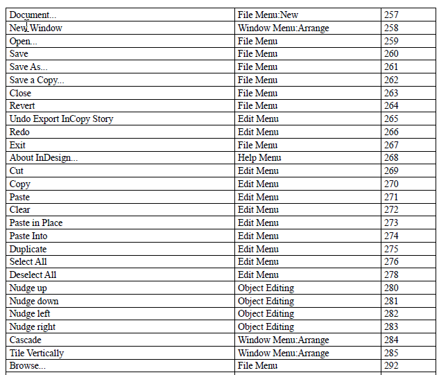

How to open any menu item by script in InDesign
What if you want to open a menu item by script? For example the Configure plug-ins window. The solution is not on the surface: neither the InDesign Scripting Reference nor the InDesign Scripting Guide say anything about it.
However it is possible to achieve by invoking a menu action by ID. In our particular case we would use:
app.menuActions.itemByID(45313).invoke();
But how can I get the list of all the menu action IDs available in my copy of InDesign? (Note that this list may be a little different for each installation since scripts can be installed as menu items) To get the list create a blank new document and run this script:
var myActions = app.menuActions;
var myActionsList = Array();
var counter = Number(0);
for(var i = 0; i < myActions.length; i++){
myActionsList.push(String(myActions[i].name));
myActionsList.push(String(myActions[i].area));
myActionsList.push(String(myActions[i].id));
}
var myDoc = app.activeDocument;
var myTextFrame = myDoc.pages[0].textFrames.add();
myTextFrame.geometricBounds = app.activeDocument.pages[0].bounds;
var myMenuActionsTbl = myTextFrame.insertionPoints[0].tables.add();
myMenuActionsTbl.columnCount = 3;
myMenuActionsTbl.bodyRowCount = myActions.length;
myMenuActionsTbl.contents = myActionsList;
It will add a text frame with table listing all menu items and their IDs. By the way, there are more than 3,200 of them!

Here is the list I generated on my home PC for InDesign CS3 and CS5.
Another and a more reliable approach is to invoke a menu action by name.
You can reference a menu action by locale independent string like this:
var myMenuAction = app.menuActions.item("$ID/Open...");
or like so:
var myMenuAction = app.menuActions.item("Open...");
and invoke it: myMenuAction.invoke();
To get the list of menu actions run this script:
var arr = [];
for (var i = 0; i < app.menuActions.length; i++) {
arr.push((i + 1) + " - " + app.menuActions[i].name);
}
var str = arr.join("\r");
WriteToFile(str);
function WriteToFile(text) {
file = new File("~/Desktop/Menu actions.txt");
file.encoding = "UTF-8";
file.open("w");
file.writeln(text);
file.close();
}
Here is a list generated from my copy of InDesign CS6 for Windows.
You can also invoke a menu item referencing it by name. For example, to imitate the Sort by Name command in the Character Styles panel we can run this code:
var myMenu = app.menus.item("$ID/CharStylePanelPopup");
var myMenuItem = myMenu.menuItems.item("Sort by Name");
var myMenuAction = myMenuItem.associatedMenuAction;
myMenuAction.invoke();
However, you don't always need the methods described above. For example, to open the Index panel, simply do
app.panels.item("Index").visible = true;
or for locale independent strings use the "$ID/englishname" method:
app.panels.itemByName("$ID/Articles").visible = true;
For example, the German locale for "Articles" is "Artikel", so the above line is the equivalent for the German InDesign to say:
app.panels.itemByName("Artikel").visible = true;
The names of the panels you can set like this can be displayed by the following one-liner:
$.writeln(app.panels.everyItem().name.sort().join('\r'));
Also, it’s a good idea to check if the menu is available in the situation you want to use it.
For example, “Override All Master Page Items” is not available if no document is open.
So before using it, you could check if it is valid and enabled, like so:
var menuAction = app.menuActions.itemByName("$ID/Override All Master Page Items");
if (menuAction.isValid && menuAction.enabled) {
menuAction.invoke();
}
Important note: InDesign Server does not support menuActions.
Also, check out the Menu actions script by Peter Kahrel and read Marc Autret's How to Create your Own InDesign Menus article.